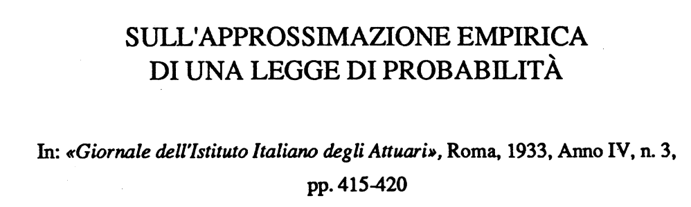
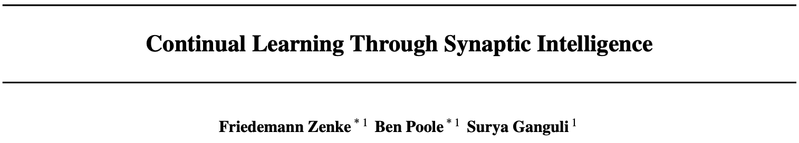

###Lifelong Learning and Beyond <br> <center>  </center> Joshua T. Vogelstein ([jovo@jhu.edu](mailto:jovo@jhu.edu)) | <!-- Jayanta Dey, Ali Geisa, Hayden Helm, Ronak Mehta, Will LeVine, --> <!-- Carey E. Priebe<br> --> [Johns Hopkins University](https://www.jhu.edu/) --- ### What is learning (informally)? -- <br> "The acquisition of knowledge or skills through experience, study, or by being taught." -- Google, 2020 -- "A computer .ye[program] is set to learn from an .ye[experience] E with respect to some .ye[task] T and some .ye[performance measure] P if its performance on T as measured by P .ye[improves] with experience E." -- Tom Mitchell, 1997 -- ".ye[$f$] learns from .ye[data] $\mathbf{D}_n$ w.r.t. .ye[tasks] $s$ when its .ye[performance] at $s$ improves due to $\mathbf{D}_n$." -- jovo, 2020 --- ### What is learning (formally)?  <img src="images/Vapnik71b.png" style="width:400px;"/> <img src="images/Valiant84.png" style="width:400px;"/> <!-- <img src="images/Mitchell97a.png" style="width:400px;"/> --> --- ### Impedance mismatch between informal and formal - Informal - intuitively pleasing - not formalized / operationalized - Formal - formalized / operationalized - assumes (wrongly!) training and testing distributions assumed to be the same - only considers one task and one dataset --- ### Our Goal We desire a framework that: 1. formalizes our intuitive understanding of what is learning 2. includes many different kinds of learning scenarios 3. enables rich theory to provide insight 4. guides practice to improve current AI/ML --- ### Out-Of-Distribution Learning Theory - We formalize OOD learning theory - The key insight is decoupling the training data distribution from the test data distribution <!-- the evaluation distribution from training data distributions--> <!--  --> --- ### Classical ML Task Setup - X: observations - Y: actions/labels - S: setting (fixed in classical ML) - t: indexes samples  --- ### Classical ML Task Minimize error (subject to constraints)  --- ### OOD Task Minimize OOD error (subject to constraints)  Note: - S is assumed to be sampled from some distribution over settings - train and test distributions are not necessarily the same - this makes $#*% harder --- ### OK, What is Learning Now? We introduce .ye[learning efficiency]: - $ \mathbf{D}^\emptyset $ is the knowledge prior to acquiring data. - $ \mathbf{D}^1 $ is some training data - $f$ is the learner $$ \text{LE}_f^s(\mathbf{D}^\emptyset, \mathbf{D}^1) = \frac{\mathcal{E}_f^s(\mathbf{D}^\emptyset)}{\mathcal{E}_f^s(\mathbf{D}^1)} $$ <br> - $f$ .ye[learned] wrt task $s$ from data $\mathbf{D}^1$ if $ \text{LE} > 1 $, or $\log \text{LE} > 0$. - $f$ .ye[forgot] wrt task $s$ from data $\mathbf{D}^1$ if $ \text{LE} < 1 $, or $\log \text{LE} < 0$. - $f$ can learn locally and forget globally, and vice versa - $f$ .ye[transfers] information from $\mathbf{D}^1$ into $\hat{g}$ (hypothesis) --- ### Revisiting our goals We desire a formal learning theory framework that: - [X] formalizes our intuitive understanding of what is learning - [ ] includes many different kinds of learning scenarios - [ ] enables rich theory to provide insight - [ ] guides practice to improve current AI/ML --- ### Transfer Learning - One task and multiple data sets. - $ \mathbf{D}^1 $ is the task data. - $ \mathbf{D} $ is all of the data - Measure if OOD data helped performance over just task data $$ \text{LE}_f^s(\mathbf{D}^1, \mathbf{D}) = \frac{\mathcal{E}_f^s(\mathbf{D}^1)}{\mathcal{E}_f^s(\mathbf{D})} $$ <br> $f$ transfer learned wrt task $s$ using $\mathbf{D} \backslash \mathbf{D}^1$ if $\log \text{LE}_f^s > 0 $. --- ### Multitask Learning - Multiple tasks and multiple data sets. - $ \mathbf{D}^s$ is the data for task $s$. - $ \mathbf{D} $ is all of the data. - Measure transfer learning for each task, $$ \text{LE}_f^s(\mathbf{D}^s, \mathbf{D}) = \frac{\mathcal{E}_f^s(\mathbf{D}^s)}{\mathcal{E}_f^s(\mathbf{D})} $$ - $f$ transfer learned for task $s$ if $ \log \text{LE}_f^s > 0 $. - $f$ multitask learned if weighted average of log learning efficiencies is positive. - multitask learning is just transfer learning across multiple tasks --- ### Lifelong Learning - Similar to multitask learning - Sequential rather than batch - Everything is streaming: data, queries, actions, error, and tasks. - Anything about task can change over time. --- ### What is lifelong cheating? - Store every sample you've ever seen - Every time we are faced with a new data, just update everything in batch mode - Now just run your favorite multitask $f$ - Doing so naively consumes $ o(n) $ space and/or $ o(n^2) $ time. - Differentiating lifelong from multitask learning requires efficient algorithms <!-- - $f$ must consume less than quadratic resources as a function of $n$, $f \in o(n^2)$ --> --- ### What is forward learning? - Let $\mathbf{D}^{s}$ be the set of data points associated to task $s$ - Let $\mathbf{D}^{< s}$ be the set of data points up to and including the last data point from task $s$ - .ye[Forward] learning efficiency is the improvement on task $t$ resulting from all data .ye[preceding] task $s$ $$ \text{LE}_f^s(\mathbf{D}^{s}, \mathbf{D}^{< s}) := \frac{\mathcal{E}_f^s(\mathbf{D}^{s})}{\mathcal{E}_f^s(\mathbf{D}^{< s})} $$ <br> $f$ .ye[forward learns] if $\log \text{LE}_f^s > 0$. --- ### What is backward learning? .ye[Backward] learning efficiency is the improvement on task $t$ resulting from all data .ye[after] task $t$ $$ \text{LE}_f^s(\mathbf{D}^{< s}, \mathbf{D}_n) := \frac{\mathcal{E}_f^s(\mathbf{D}^{s})}{\mathcal{E}_f^s(\mathbf{D}_n)} $$ <!-- $$ \text{LE}^s\_{\mathbf{n}}(f) := \frac{\mathcal{E}_f^s(\mathbf{D}^{< t}\_n)}{\mathcal{E}_f^s(\mathbf{D}\_n)} $$ --> <br> $f$ .ye[backward learns] if $\log \text{LE}^s_f > 0$. --- ### Learning efficiency factorizes <!-- $$LE^s\_{\mathbf{n}}(f) := FLE^s\_{\mathbf{n}}(f) \times BLE^s\_{\mathbf{n}}(f) $$ --> $$ \frac{\mathcal{E}_f^s(\mathbf{D}^{s})}{\mathcal{E}_f^s(\mathbf{D}\_n)} = \frac{\mathcal{E}_f^s(\mathbf{D}^{s})}{\mathcal{E}_f^s(\mathbf{D}^{< s})} \times \frac{\mathcal{E}_f^s(\mathbf{D}^{< s})}{\mathcal{E}_f^s(\mathbf{D}\_n)} $$ --- ### Special cases Each of the previous definitions are all special cases of $LE^s_f(A, B)$, for specific choices of $A$ and $B$ | Setting | $A$ | $B$ | | --- | --- | --- | | Learning | $\mathbf{D}^\emptyset$ | $\mathbf{D}\_n$ | | Transfer | $\mathbf{D}^1$ | $\mathbf{D}\_n$ | | Multitask, for each $s$ | $\mathbf{D}^s$ | $\mathbf{D}\_n$ | | Forward learning | $\mathbf{D}^s$ | $\mathbf{D}^{< s}$ | | Backward learning | $\mathbf{D}^{< s}$ | $\mathbf{D}\_n$ | <!-- Conjecture: All learning metrics we care about are functions of learning efficiency for a specific $A$ and $B$. --> --- ### Many different learning scenarios  --- ### Revisiting our goals We desire a formal learning theory framework that: - [X] formalizes our intuitive understanding of what is learning - [X] includes many different kinds of learning scenarios - [ ] enables rich theory to provide insight - [ ] guides practice to improve current AI/ML <!-- --- ### Proving novel properties of OOD learning  basically, using non-task data to improve performance at all  basically, using non-task data to perform arbitrarily well --> --- ### Weak OOD Learner Theorem Classical theory: - Weak learning: can do better than chance on some task with sufficient data - Strong learning: can do arbitrarily close to optimal on some task with sufficient data - Weak Learner Theorem: if a problem is weakly learnable, it is also strongly learnable OOD learning theory - Training distribution is uncoupled from evaluation distribution --- ### More data is inadequate for OOD Theorem 1: With *only* out-of-distribution data, there exists some problems that are weakly, but not strongly, learnable. - This implies that OOD learning is different *in kind* from in-distribution learning. <!-- - Lifelong learning is a special case of OOD learning --> - Getting .ye[more] data is *not* guaranteed to improve performance arbitrarily in LL, we need .ye[better] data --- ### Learning efficiency is fundamental Theorem 2: Weak OOD learnability implies positive log learning efficiency (i.e., transfer). <!-- That is, if one can weakly learn, one can also transfer learn, but not necessarily vice versa. --> - This implies that positive learning efficiency is a fundamental property of learning problems - In other words, inability to positively transfer is equivalent to inability to learn at all. --- ### Revisiting our goals We desire a formal learning theory framework that: - [X] formalizes our intuitive understanding of what is learning - [X] includes many different kinds of learning scenarios - [X] enables rich theory to provide insight - [ ] guides practice to improve current AI/ML --- ### Lifelong learning is hard: <br>Catastrophic interference/forgetting  --- ### 30 years later... <img src="images/rock20/masse1.png" style="width:500px;"/> <img src="images/rock20/flesch1.png" style="width:500px;"/> <img src="images/rock20/kirkpatrick1.png" style="width:500px;"/>  <br> And the struggle to not forget continues... --- ### Our claim Previous works set the bar too low. A lifelong learning agent should achieve - $+$ forward transfer: $\log \text{LE}_f^s(\mathbf{D}^{s}, \mathbf{D}^{< s}) > 0$ for each task - $+$ backward transfer: $\log \text{LE}_f^s(\mathbf{D}^{< s}, \mathbf{D}_n) > 0$ for each task --- ### Our approach: <br>ensembling representations  --- ### Omnidirectional Algorithms can Transfer Between XOR and XNOR  --- ## CIFAR 10x10 .pull-left[ - *CIFAR 100* is a popular image classification dataset with 100 classes of images. - 500 training images and 100 testing images per class. - All images are 32x32 color images. - CIFAR 10x10 breaks the 100-class task problem into 10 tasks, each with 10-class. ] .pull-right[ <img src="images/l2m_18mo/cifar-10.png" style="position:absolute; left:450px; width:400px;"/> ] --- ### Omnidirectional Algorithms<br>$+$ Forward Transfer <!-- CIFAR 10x10 --> <!-- - *CIFAR 100* is a popular image classification dataset with 100 classes of images. --> <!-- - CIFAR 10x10 breaks the 100-class task problem into 10 tasks, each with 10-class. -->  --- ### Omnidirectional Algorithms:<br>Uniquely $+$ Backward Transfer <!-- Uniquely Show Backward Transfer for Each Task -->  --- ### Revisiting our goals We desire a formal learning theory framework that: - [X] formalizes our intuitive understanding of what is learning - [X] includes many different kinds of learning scenarios - [X] enables rich theory to provide insight - [X] guides practice to improve current AI/ML --- ### Future Directions/ Transitions - omnidirctional algorithm code continues to improve [http://proglearn.neurodata.io/](http://proglearn.neurodata.io/) - streaming forest for streaming lifelong learning setup [https://sdtf.neurodata.io](https://sdtf.neurodata.io)  --- ### Kernel Density Networks/Forests generate well calibrated posteriors - [https://github.com/neurodata/kdg](https://github.com/neurodata/kdg) - KDG on Guassian XOR simulation data  <br> --- ### Deep Networks are the worst model of the mind <img src= "images/nn_rf_jong.gif" alt="jong" width = "700" height= "250"> --- ### Publications 1. A. Geisa et al. [Towards a theory of out-of-distribution learning](https://arxiv.org/abs/2109.14501), arXiv, 2021. 1. J. T. Vogelstein et al. [Omnidirectional Transfer for Quasilinear Lifelong Learning](https://arxiv.org/abs/2004.12908), arXiv, 2021. 1. Xu, Haoyin, et al. [Streaming Decision Trees and Forests](https://arxiv.org/abs/2110.08483), arXiv, 2021. 1. C. E. Priebe et al. [Modern Machine Learning: Partition and Vote](https://doi.org/10.1101/2020.04.29.068460), bioRxiv, 2020. 1. R Guo, et al. [Estimating Information-Theoretic Quantities with Uncertainty Forests](https://arxiv.org/abs/1907.00325). arXiv, 2019. 1. R. Perry, et al. [Manifold Forests: Closing the Gap on Neural Networks](https://openreview.net/forum?id=B1xewR4KvH). arXiv, 2019. 1. C. Shen and J. T. Vogelstein. [Decision Forests Induce Characteristic Kernels](https://arxiv.org/abs/1812.00029). arXiv, 2019. 1. M. Madhya, et al. [BLOCKSET: Reducing Inference Latency for Tree Ensemble Deployment](https://dl.acm.org/doi/10.1145/3447548.3467368). KDD '21. 1. M. Madhya, et al. [Geodesic Forests](https://dl.acm.org/doi/10.1145/3394486.3403094). KDD '20. --- ### Acknowledgements <!-- <div class="small-container"> <img src="faces/ebridge.jpg"/> <div class="centered">Eric Bridgeford</div> </div> <div class="small-container"> <img src="faces/pedigo.jpg"/> <div class="centered">Ben Pedigo</div> </div> <div class="small-container"> <img src="faces/jaewon.jpg"/> <div class="centered">Jaewon Chung</div> </div> --> <div class="small-container"> <img src="faces/yummy.jpg"/> <div class="centered">yummy</div> </div> <div class="small-container"> <img src="faces/lion.jpg"/> <div class="centered">lion</div> </div> <div class="small-container"> <img src="faces/violet.jpg"/> <div class="centered">baby girl</div> </div> <div class="small-container"> <img src="faces/family.jpg"/> <div class="centered">family</div> </div> <div class="small-container"> <img src="faces/earth.jpg"/> <div class="centered">earth</div> </div> <div class="small-container"> <img src="faces/milkyway.jpg"/> <div class="centered">milkyway</div> </div> ##### JHU <div class="small-container"> <img src="faces/cep.png"/> <div class="centered">Carey Priebe</div> </div> <div class="small-container"> <img src="faces/alig.jpg"/> <div class="centered">Ali</div> </div> <!-- <div class="small-container"> <img src="faces/randal.jpg"/> <div class="centered">Randal Burns</div> </div> --> <!-- <div class="small-container"> <img src="faces/cshen.jpg"/> <div class="centered">Cencheng Shen</div> </div> --> <!-- <div class="small-container"> <img src="faces/bruce_rosen.jpg"/> <div class="centered">Bruce Rosen</div> </div> <div class="small-container"> <img src="faces/kent.jpg"/> <div class="centered">Kent Kiehl</div> </div> --> <!-- <div class="small-container"> <img src="faces/mim.jpg"/> <div class="centered">Michael Miller</div> </div> <div class="small-container"> <img src="faces/dtward.jpg"/> <div class="centered">Daniel Tward</div> </div> --> <!-- <div class="small-container"> <img src="faces/vikram.jpg"/> <div class="centered">Vikram Chandrashekhar</div> </div> <div class="small-container"> <img src="faces/drishti.jpg"/> <div class="centered">Drishti Mannan</div> </div> --> <!-- <div class="small-container"> <img src="faces/jesse.jpg"/> <div class="centered">Jesse Patsolic</div> </div> --> <!-- <div class="small-container"> <img src="faces/falk_ben.jpg"/> <div class="centered">Benjamin Falk</div> </div> --> <!-- <div class="small-container"> <img src="faces/kwame.jpg"/> <div class="centered">Kwame Kutten</div> </div> --> <!-- <div class="small-container"> <img src="faces/perlman.jpg"/> <div class="centered">Eric Perlman</div> </div> --> <!-- <div class="small-container"> <img src="faces/loftus.jpg"/> <div class="centered">Alex Loftus</div> </div> --> <!-- <div class="small-container"> <img src="faces/bcaffo.jpg"/> <div class="centered">Brian Caffo</div> </div> --> <!-- <div class="small-container"> <img src="faces/minh.jpg"/> <div class="centered">Minh Tang</div> </div> --> <!-- <div class="small-container"> <img src="faces/avanti.jpg"/> <div class="centered">Avanti Athreya</div> </div> --> <!-- <div class="small-container"> <img src="faces/vince.jpg"/> <div class="centered">Vince Lyzinski</div> </div> --> <!-- <div class="small-container"> <img src="faces/dpmcsuss.jpg"/> <div class="centered">Daniel Sussman</div> </div> --> <!-- <div class="small-container"> <img src="faces/youngser.jpg"/> <div class="centered">Youngser Park</div> </div> --> <!-- <div class="small-container"> <img src="faces/shangsi.jpg"/> <div class="centered">Shangsi Wang</div> </div> --> <!-- <div class="small-container"> <img src="faces/tyler.jpg"/> <div class="centered">Tyler Tomita</div> </div> --> <!-- <div class="small-container"> <img src="faces/james.jpg"/> <div class="centered">James Brown</div> </div> --> <!-- <div class="small-container"> <img src="faces/disa.jpg"/> <div class="centered">Disa Mhembere</div> </div> --> <!-- <div class="small-container"> <img src="faces/gkiar.jpg"/> <div class="centered">Greg Kiar</div> </div> --> <!-- <div class="small-container"> <img src="faces/jeremias.png"/> <div class="centered">Jeremias Sulam</div> </div> --> <div class="small-container"> <img src="faces/meghana.png"/> <div class="centered">Meghana Madhya</div> </div> <!-- <div class="small-container"> <img src="faces/percy.png"/> <div class="centered">Percy Li</div> </div> --> <div class="small-container"> <img src="faces/hayden.png"/> <div class="centered">Hayden Helm</div> </div> <div class="small-container"> <img src="faces/rguo.jpg"/> <div class="centered">Richard Gou</div> </div> <div class="small-container"> <img src="faces/ronak.jpg"/> <div class="centered">Ronak Mehta</div> </div> <div class="small-container"> <img src="faces/jayanta.jpg"/> <div class="centered">Jayanta Dey</div> </div> <div class="small-container"> <img src="faces/will.jpg"/> <div class="centered">Will LeVine</div> </div> ##### Microsoft Research <div class="small-container"> <img src="faces/chwh-180x180.jpg"/> <div class="centered">Chris White</div> </div> <div class="small-container"> <img src="faces/weiwei.jpg"/> <div class="centered">Weiwei Yang</div> </div> <div class="small-container"> <img src="faces/jolarso150px.png"/> <div class="centered">Jonathan Larson</div> </div> <div class="small-container"> <img src="faces/brtower-180x180.jpg"/> <div class="centered">Bryan Tower</div> </div> ##### DARPA L2M <!-- Hava, Ben, Robert, Jennifer, Ted. --> {[BME](https://www.bme.jhu.edu/),[CIS](http://cis.jhu.edu/), [ICM](https://icm.jhu.edu/), [KNDI](http://kavlijhu.org/)}@[JHU](https://www.jhu.edu/) | [neurodata](https://neurodata.io) <br> [jovo@jhu.edu](mailto:j1c@jhu.edu) | <http://neurodata.io/talks> | [@neuro_data](https://twitter.com/neuro_data) </div> <!-- <img src="images/funding/nsf_fpo.png" STYLE="HEIGHT:95px;"/> --> <!-- <img src="images/funding/nih_fpo.png" STYLE="HEIGHT:95px;"/> --> <!-- <img src="images/funding/darpa_fpo.png" STYLE=" HEIGHT:95px;"/> --> <!-- <img src="images/funding/iarpa_fpo.jpg" STYLE="HEIGHT:95px;"/> --> <!-- <img src="images/funding/KAVLI.jpg" STYLE="HEIGHT:95px;"/> --> <!-- <img src="images/funding/schmidt.jpg" STYLE="HEIGHT:95px;"/> --> --- background-image: url(images/l_and_v.jpeg) .footnote[Questions?] --- class: middle # .center[Appendix] --- ### A computational taxonomy | Par. | → | ← | capacity | space | time | Examples | :---: | :---: | :---: | :---:| :---: | :---: | | par | - | - | 1 | T | nT | EWC | par | - | - | 1 | 1 | n | O-EWC, SI, LwF | par | + | - | 1 | n | nT | Total Replay | semipar | + | 0 | T | T<sup>2 | nT | ProgNN | semipar | + | - | T | T | n | DF-CNN | semipar | + | + | T | T + n | n | ODIN | nonpar | + | + | n | n | n | ODIF --- ### Spoken Digit dataset .pull-left[ - *Spoken Digit* contains recording from 6 different speakers. - Each digit has 50 recordings (3000 total recordings). - For each recording spectrogram was extracted using using Hanning windows of duration 16 ms with an overlap of 4 ms. - The spectrograms were resized down to 28×28. ] .pull-right[ <img src="images/spectrogram.png" style="position:absolute; left:500px; width:400px;"/> ] --- ### Omnidirectional Algorithms on Spoken Digit Task